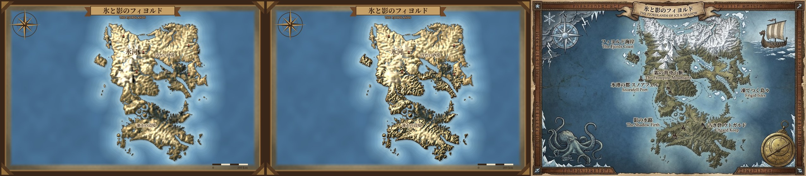
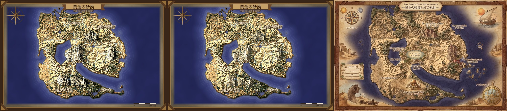

山の形を、小さな峰の群れにする試作(プログラム)
概要: 前の試作(山の色を地面から決める)の次の一手として、山の形を変えました。最初は「少数の大きな尖った峰と濃い輪郭」にしたところ、拡大するとGeminiと違い、影が黒く雪が真っ白で、大きすぎました。Geminiの山を拡大して見直すと、小さな峰を3〜6個ずつ群れにして、クリーム色と灰褐色の中間の明るさで描いています。私の最初の見立て(少数の大きな峰)は、一部誤りでした。そこで、小さな峰の群れ・中間の明るさ・クリーム色の雪に直しました。
拡大(世界5の山。左=山の色のみ直した前回 / 中=今回 / 右=Gemini)
 絵番号 E040
絵番号 E040全体(左=前回 / 中=今回 / 右=Gemini)
 絵番号 E041
絵番号 E041世界5(大陸3つ)

絵番号 E042世界6(フィヨルド)

絵番号 E043世界7(砂漠)
変えた点
- 山の層を7枚から5枚、各層の峰を3〜5個から2〜3個にし、峰の高さ(絵の大きさ)を小さくした(小さな峰の群れ)。
- 山の明暗の差を弱め、暗い面が黒くならないよう下限をつけた(中間の明るさ)。
- 雪の色を真っ白からクリーム色に変えた。ツンドラのならしをやめ、世界5北部のぼやけを減らした。
目で見た評価(私の印象。判断はユーザーに)
- 近づいた点: 峰がクリーム色の小さな群れになり、Geminiの山の見え方に近づいた。黒い影の目立ちが消えた。世界7の砂漠では、砂色の山が地面になじんでいる。
- まだ違う点: Geminiの峰は、はっきりした三角形と灰色の細かい線(ハッチング)で、森や草地の緑の中に立っている。こちらは、峰が横に平たく広がって見え、線の陰影がない。
- 世界7: 山の形は読めるが、周りの砂色に近く、目立たない。Geminiは山を赤茶色にして目立たせている(推測)。
限界・未確認
- 3枚の目視のみ。数字での評価はしていない。
- 山の層・峰の数・明暗の強さは、私が試して決めた値。
- 山岳地帯は細長い南北の帯のため、群れが縦に並ぶ傾向がある。
- Geminiの山の描き方(三角形と線の陰影)は、まだ再現していない。
コード: stage13_gen.py(山の描画)/art13_gen.py(稜線)/gstyle3_gen.py(色・飾り)。